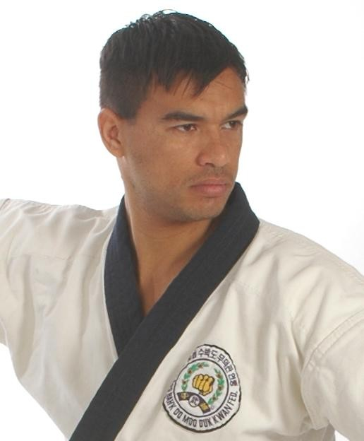

Bienvenido a la Asociación Española de Soo Bahk Do (Tang Soo Do) Moo Duk Kwan. Nos sentimos honrados que usted haya elegido nuestra Escuela para su hijo. Es nuestro compromiso brindarle la información mas amplia sobre Historia, Tradición, Filosofía, protocolos y técnicas de este arte marcial.
La Asociación Española de SBD MDK está compuesta por un comité técnico CAT (Comité de Asesoramiento Técnico) y un comité administrativo COA (Comité de Organización y Administración).
El Comité de Asesoramiento Técnico está presidido por el director técnico nacional designado directamente por el Kwan Jang Nim, Hyun Chul Hwang (Presidente mundial). Su función es mantener, difundir y salvaguardar la esencia del arte marcial cumpliendo las directivas de la World Moo Duk Kwan Korean.Soo.Bahk.Do.Association.
El Comité de Organización y Administración está compuesto por una junta directiva elegida por los socios activos, formada por un presidente, un vicepresidente, un secretario, y un tesorero. La junta directiva tendrá como objetivo primario el beneficio de todos los socios de la asociación y asegurar la difusión del arte. Mediante la correcta administración y organización, buscará apoyar al comité técnico logrando así la armonía necesaria para cumplir con los requerimientos que exige la organización mundial denominada World Moo Duk Kwan Korean Soo Bahk Do.
Es mi deseo como director técnico de SBD MDK en España que encuentre en esta entidad su camino de arte marcial y vida, fecundado por la amistad y las relaciones humanas, y así juntos podamos armonizarnos en un camino de paz, buscando siempre la superación personal y convirtiéndonos en verdaderos artistas marciales.

Diego Salinas
Designado de World Moo Duk Kwan Korean Soo Bahk Do Presidente Técnico Nacional Maestro Instructor Internacional Matricula 35.919